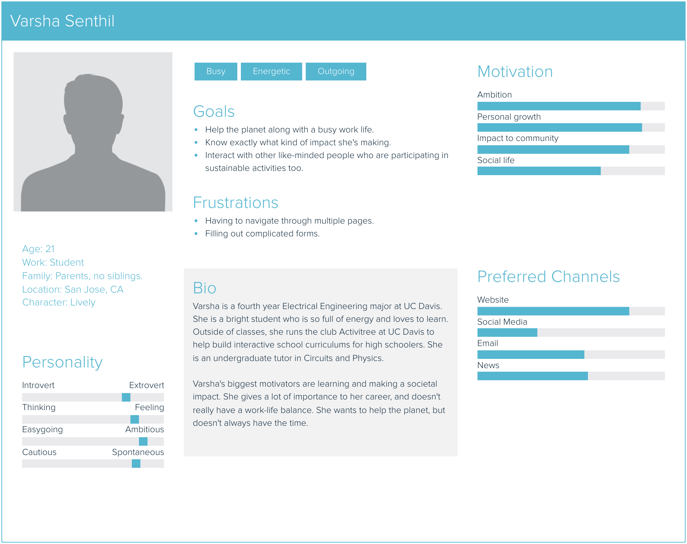
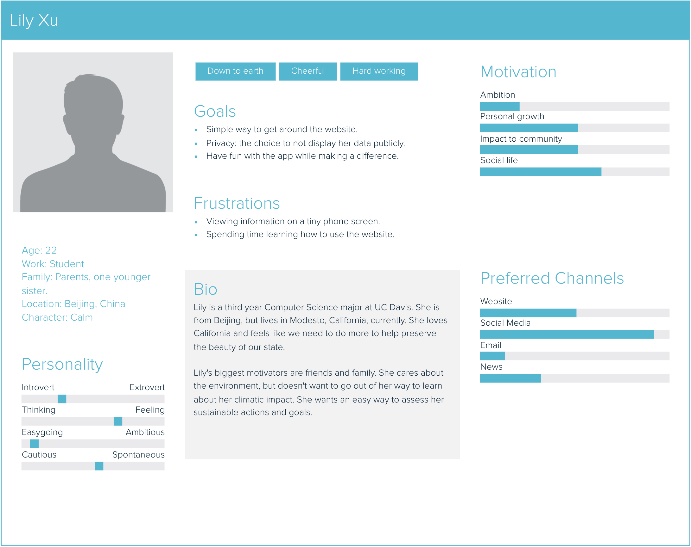

Project Summary
My project is a desktop-based web application for users to grow their own virtual plants to track their daily efforts toward environment conservation.
Project Goals
-
Logging users' daily activities: The web app will open with a form where users can input what sustainable activities they did, such as recycling, donating to charity, using organic products, etc. These activities will then get stored in a database. This is to allow users to be more conscious about their daily habits and come up with ways to be more sustainable. They will be able to track habits such as daily commute, daily consumption, waste management, etc.
-
Growing the virtual plant: Each user will have his/her own unique dashboard where the virtual plant will grow. For each sustainable activity they complete, the plant will grow a little bit. The plant will start out as a sapling, and the “goal” will be reached when it grows to its full height. This is to give users positive reinforcement for their efforts and visual satisfaction upon completing their sustainability goals.
-
Allowing users to participate in a “community garden”: There will be a page for users to view other users’ plants and information about their activities. This will be a good place for users to gain motivation and see the collective impact they are making along with the community.
Design Strategies
The overall moods of this project are positive, calm, and elegant. The color scheme will be soft shades of green, representing nature and sereneness. The typography will be minimalist and elegant (mostly simple serif/sans serif), since my application will cater to older users (particularly in the age group of high school and above). The individual plant will have ample white space around it, as will the community garden (after all, plants need space to grow!). I am hoping to animate the plant as it grows, to give a sense of movement and visual engagement for users. The background will be kept a light color, and the plant will have good contrast, to establish a figure/ground relationship.
Interaction Strategies
There will be multiple different kinds of interactions in my project. The first form of interaction will be a form UI that has multiple options to select from. This is to give users the flexibility to add multiple activities, all the while being constrained to existing sustainable activities.
On the virtual plant page, there will be two buttons: 'Add Activity' and 'Community Garden'. The add activity button will take them back to the form where they can add another activity, and the community garden button will take them to the page where they can view other peoples' plants.
On the community garden page, users will be able to interact with each person's plant by hovering over it. As they hover, a popup window will show them the activities that the person has done to “grow” their plant. This page will also have a side scrolling interface with arrows on the left and right so that users can cycle through all the plants that were grown that day.
Experience Goals
Firstly, I want users to have a smooth experience navigating the page. Having two main buttons on the plant dashboard makes it clear what the main functionalities of the app are. The form experience should be easy and shouldn't require too much thinking on the user's part. This will be achieved by using a multiselect library with options or categories that users can pick from when adding their activity. But at the same time, I want the form to be open-ended enough that users don’t feel limited by the options. To find a middle-ground between flexibility and constraint, I will give users an 'Other' option so they can enter a free response. If time permits, I will have a filtering system that recognizes key words entered by the user to determine whether what they entered is actually a sustainable activity.
On the community garden page, I will have a scrolling interface to reduce cognitive overload. I want all the other daily plants to be visible, but at the same time, I don't want it to be overwhelming. With the scrolling interface, users can choose which plants they want to see. One page will show about 4-5 plants at a time.
Finally, I am aiming for the overall experience to be engaging and enjoyable. The animations of the plant growing will achieve this. I also aim to have simple animations for interactions such as button clicks, hover, and scroll. All of these will tie together in creating a clean and visually positive user experience for my target audience.
Users
Varsha Senthil, Age 21
Lily Xu, Age 22
